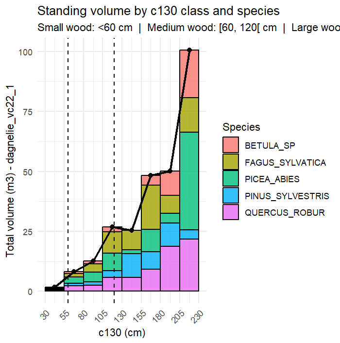

Source:
vignettes/table.Rmd
table.Rmd
GCubeR – Implementation
| Function | Method | Outputs | Inputs | Main formula (generic form) | Notes / Context |
|---|---|---|---|---|---|
| Converting module | |||||
c150_c130()
|
Convert c150 to c130 orConvert c130 to c150 |
c150c130
|
c130c150
|
c130=a⋅c150+bc150=(c130-b)/a
|
The function computes c150 or c130 depending
on data availabity
|
add_c130_dbh()
|
Add or compute c130 and dbh
|
c130dbh
|
dbhc130
|
dbh = c130 / πc130 = dbh · π
|
Auto-fills missing c130 or dbh. |
| General & widely applicable volume models | |||||
dagnelie_vc22_1()
|
Dagnelie single entry |
vc22
|
c130
|
vc22 = a + b·c130 + c·c130² + d·c130³
|
Simplest Dagnelie taper model, relies only on circumference. |
dagnelie_vc22_1g()
|
Dagnelie graduaded |
vc22
|
c130 hdom
|
vc22 = a + b·c130 + c·c130² + d·c130³ + e·hdom +
f·c130²·hdom
|
Improves accuracy in pure, even-aged stands by adding dominant height. |
dagnelie_vc22_2()
|
Dagnelie 2 entry |
vc22
|
c130 htot
|
vc22 = a + b·c130 + c·c130² + d·c130³ + e·htot +
f·c130²·htot
|
Most precise Dagnelie model; recommended mainly for high-value trees due to height measurement cost. |
dagnelie_br()
|
Dagnelie – Branch volume |
vbr
|
c130
|
vbr = a + b·c130 + c·c130² + d·c130³
|
Estimates branch volume from circumference only. |
vallet_vta()
|
Vallet - Volume above ground |
vta
|
c130 htot
|
form = (a + b·c130 + c·c130/htot)·(1 +
d·c130²)vta = form · (π / 40000) · c130² ·
htot
|
Explicitly models stem form factor; primarily for French species. |
vallet_vc22()
|
Vallet merchantising volume |
vc22
|
dbh htot
|
vc22 = a·htot/dbh + (b + c·dbh)·π·dbh²·htot / 40000
|
Geometrically adjusted; species-specific coefficients reflecting stem structure. |
| Context-specific methods | |||||
algan_vta_vc22()
|
Algan - volume computer(2006) |
vtavc22
|
dbhhtot
|
vta = 0.40 · (dbh/100)² · htotvc22 = 0.33 ·
(dbh/100)² · htot
|
Simplified geometric estimator; mainly used in France for Abies alba. |
bouvard_vta()
|
Bouvard - Volume above ground |
vta
|
dbhhtot
|
vta = 0.50 · (dbh/100)² · htot
|
Specific to oaks (Quercus sp.), especially in coppice-with-standards regimes. |
rondeux_vc22_vtot()
|
Rondeux / Pauwels et al. (2022) |
vtotvc22
|
c130htot
|
vtot = a · c130² · htot vc22 = a + b · c130² ·
htot
|
Wallonia-specific; calibrated for larch (Larix sp.) in small-circumference trees (first thinnings). |
| Biomass / carbon computer | |||||
biomass_calc() – CNPF pathway
|
CNPF / France Valley |
bagbbgbtotcarbonCO₂
|
vc22 |
bag = vc22 · feb · densitybbg = exp(−a +
b·ln(bag) + c)btot = bag + bbgC =
0.475 · btot
|
feb = 1.30 (conifers)feb = 1.56
(broadleaves)carbon and CO₂ derived from total biomass. |
biomass_calc() – Vallet pathway
|
Follow Vallet et al. (2006) |
bagbbgbtotcarbonCO₂
|
vallet_vta |
bag = vta · densitybbg = exp(−a + b·ln(bag) +
c)btot = bag + bbg
|
Used when vallet_vta is availableroot biomass is implicitly included. |
| Plot module | |||||
plot_by_class()
|
Plot histogram by class of c130
|
vc22vtabtot |
 |
Class width can be adjusted by the breaks input in the function | |